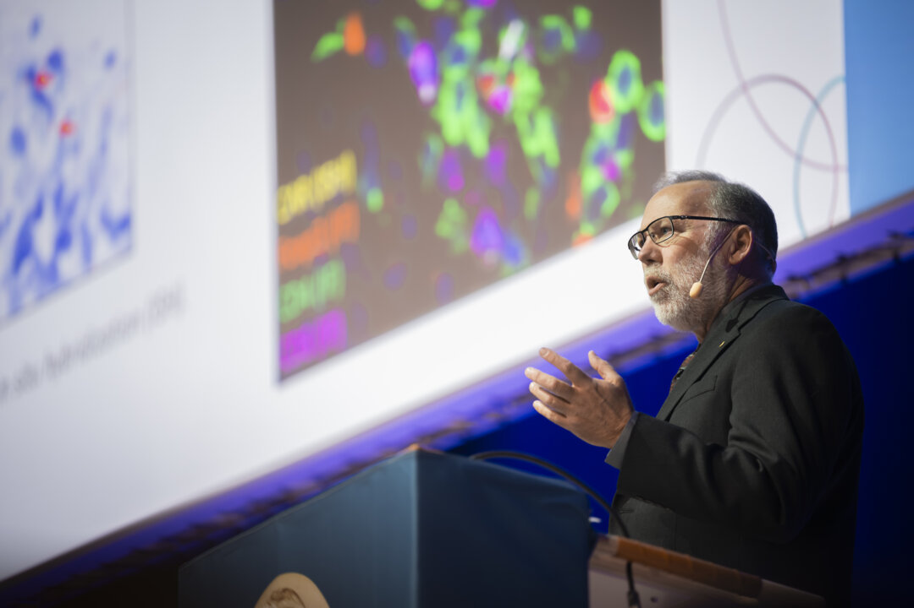

01 · 引导页
斯德哥尔摩的光
把荣誉、历史与个人生命轨迹收束到一条视觉长卷里。
诺贝尔奖 · 学术生命图谱
这个主页被重构为全屏逐页故事书。你可以只在右侧的翻页区域滚轮，页面就会整页切换，像展厅里的策展导览一样前进。 首页先用照片轮播建立气氛，再进入项目总览与五个独立故事章节。
把荣誉、历史与个人生命轨迹收束到一条视觉长卷里。
让照片先发声，再进入数据叙事。

用视觉节奏提示后续内容的全局分工。
项目总览
这一页不展示复杂图形，只交代整套项目的叙事骨架、协作方式和视觉节奏。每一位成员都拥有独立模块，主页只负责把故事顺滑地带过去。
收束页
这一页可以放项目总结、答辩信息或者致谢。整个主页现在是一个独立的逐页容器，图表模块与页面外壳已经分离，后续每个成员都能在自己的章节里自由编写。
你现在看到的是一个更适合展示、答辩和协作的主页框架。